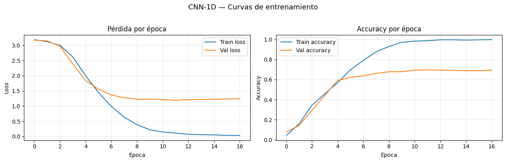
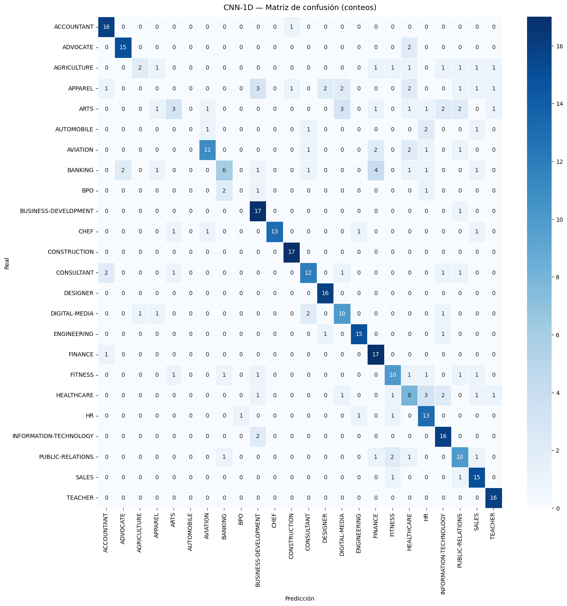
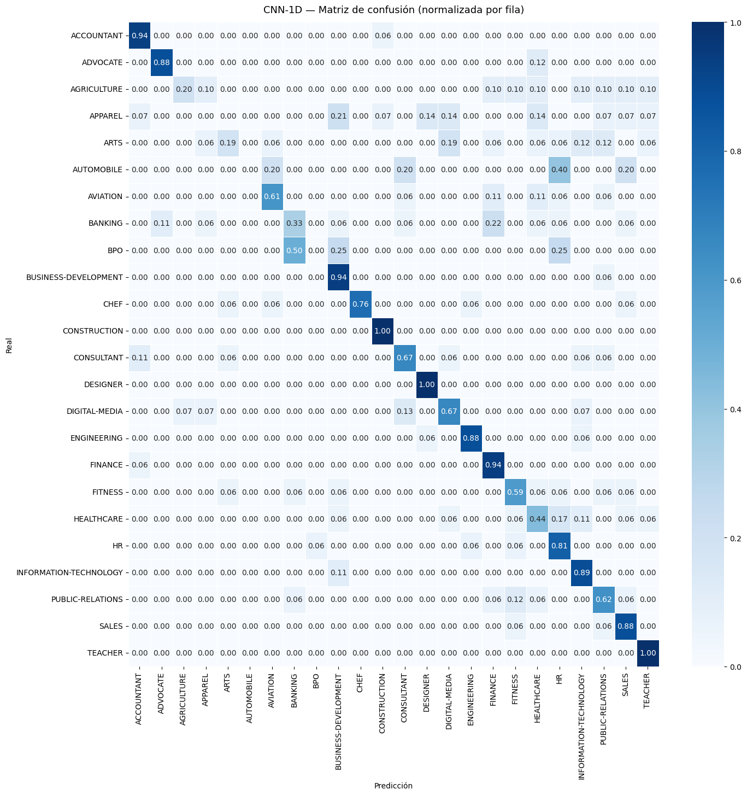
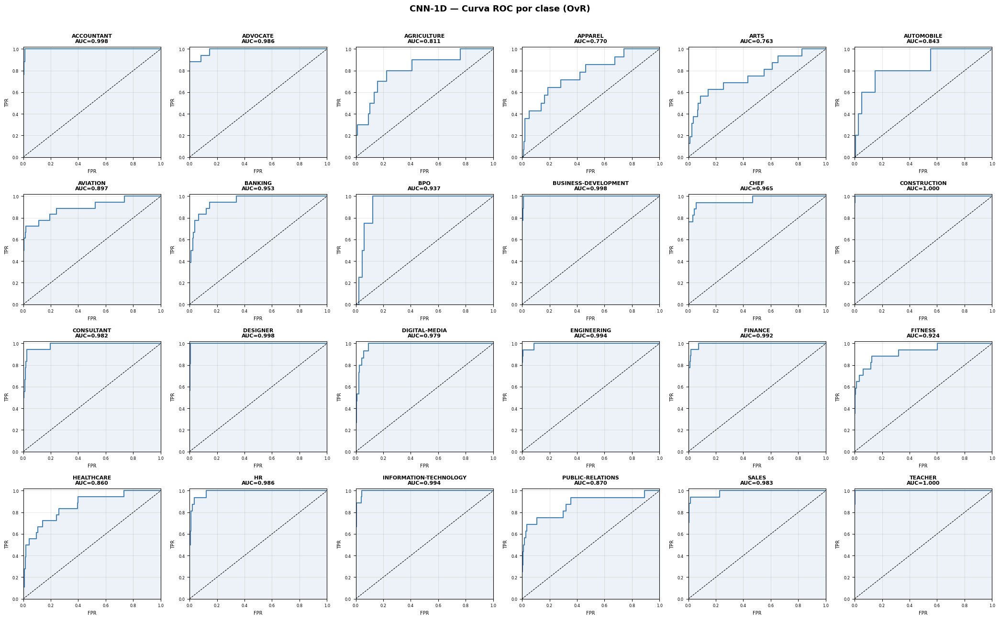
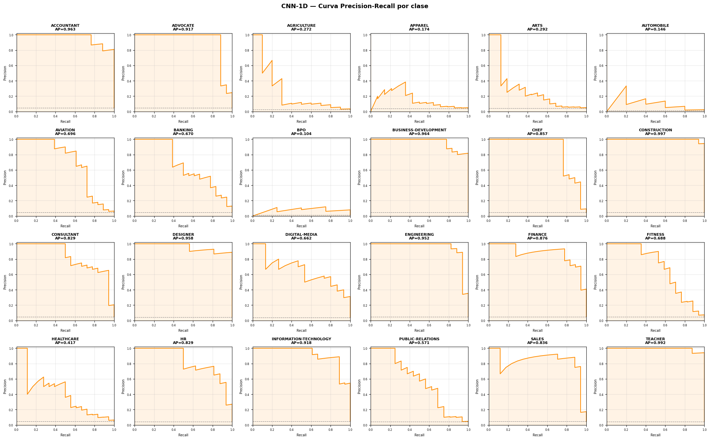

03 — CNN-1D para Clasificación de Texto#
Modelo: Red Neuronal Convolucional 1D con embeddings entrenables
Input: secuencias paddeadas (X_train/val/test.npy) + etiquetas (y_*.npy)
Output: categoría profesional (24 clases)
Entorno: Python 3.10 · TensorFlow 2.20.0 · GPU (CUDA)
1. Imports y configuración#
import os
import json
import pickle
import numpy as np
import matplotlib.pyplot as plt
import seaborn as sns
from sklearn.metrics import (
accuracy_score, precision_score, recall_score, f1_score,
confusion_matrix, roc_auc_score,
RocCurveDisplay, PrecisionRecallDisplay, classification_report
)
from sklearn.preprocessing import label_binarize
import tensorflow as tf
from tensorflow import keras
from tensorflow.keras import layers
from tensorflow.keras.callbacks import EarlyStopping, ReduceLROnPlateau, ModelCheckpoint
from tensorflow.keras import regularizers
# ── Rutas ──────────────────────────────────────────────────────────────────
BASE_DIR = os.path.abspath(os.path.join(os.getcwd(), '..'))
ARTIFACTS_DIR = os.path.join(BASE_DIR, 'artifacts')
MODELS_DIR = os.path.join(BASE_DIR, 'models')
METRICS_DIR = os.path.join(ARTIFACTS_DIR, 'metrics')
os.makedirs(MODELS_DIR, exist_ok=True)
os.makedirs(METRICS_DIR, exist_ok=True)
# ── Reproducibilidad ────────────────────────────────────────────────────────
SEED = 42
np.random.seed(SEED)
tf.random.set_seed(SEED)
print('TensorFlow:', tf.__version__)
print('GPUs disponibles:', tf.config.list_physical_devices('GPU'))
TensorFlow: 2.20.0
GPUs disponibles: [PhysicalDevice(name='/physical_device:GPU:0', device_type='GPU')]
2. Carga de artefactos#
# ── Secuencias paddeadas ────────────────────────────────────────────────────
X_train = np.load(os.path.join(ARTIFACTS_DIR, 'X_train.npy'))
X_val = np.load(os.path.join(ARTIFACTS_DIR, 'X_val.npy'))
X_test = np.load(os.path.join(ARTIFACTS_DIR, 'X_test.npy'))
y_train = np.load(os.path.join(ARTIFACTS_DIR, 'y_train.npy'))
y_val = np.load(os.path.join(ARTIFACTS_DIR, 'y_val.npy'))
y_test = np.load(os.path.join(ARTIFACTS_DIR, 'y_test.npy'))
# ── Config y LabelEncoder ──────────────────────────────────────────────────
with open(os.path.join(ARTIFACTS_DIR, 'config.pkl'), 'rb') as f:
config = pickle.load(f)
with open(os.path.join(ARTIFACTS_DIR, 'label_encoder.pkl'), 'rb') as f:
le = pickle.load(f)
MAX_LEN = config['MAX_LEN']
VOCAB_SIZE = config['VOCAB_SIZE']
NUM_CLASSES = config['NUM_CLASSES']
CLASS_NAMES = le.classes_
print(f'MAX_LEN={MAX_LEN} VOCAB_SIZE={VOCAB_SIZE} NUM_CLASSES={NUM_CLASSES}')
print(f'Train: {X_train.shape} Val: {X_val.shape} Test: {X_test.shape}')
MAX_LEN=100 VOCAB_SIZE=20000 NUM_CLASSES=24
Train: (1738, 100) Val: (373, 100) Test: (373, 100)
3. Pesos de clase (manejo del desbalance)#
from sklearn.utils import compute_class_weight
class_weights_arr = compute_class_weight(
class_weight='balanced',
classes=np.unique(y_train),
y=y_train
)
class_weight_dict = dict(enumerate(class_weights_arr))
print('Pesos de clase (min / max):',
f"{min(class_weights_arr):.3f} / {max(class_weights_arr):.3f}")
Pesos de clase (min / max): 0.862 / 4.828
4. Arquitectura CNN-1D#
# ── Hiperparámetros ─────────────────────────────────────────────────────────
EMBEDDING_DIM = 128
NUM_FILTERS = 128
KERNEL_SIZE = 5
DROPOUT_RATE = 0.4
LEARNING_RATE = 0.001
BATCH_SIZE = 64
EPOCHS = 50 # early stopping controla la parada real
# ── Modelo ──────────────────────────────────────────────────────────────────
inputs = keras.Input(shape=(MAX_LEN,), name='input_seq')
x = layers.Embedding(
input_dim=VOCAB_SIZE + 1, # +1 por el token 0 (padding)
output_dim=EMBEDDING_DIM,
mask_zero=False,
name='embedding'
)(inputs)
x = layers.Conv1D(
filters=NUM_FILTERS,
kernel_size=KERNEL_SIZE,
activation='relu',
padding='same',
name='conv1d'
)(x)
x = layers.GlobalMaxPooling1D(name='global_max_pool')(x)
x = layers.Dense(128, activation='relu', name='dense_1')(x)
x = layers.Dropout(DROPOUT_RATE, name='dropout')(x)
outputs = layers.Dense(NUM_CLASSES, activation='softmax', name='output')(x)
model = keras.Model(inputs, outputs, name='CNN1D_text_classifier')
model.compile(
optimizer=keras.optimizers.Adam(learning_rate=LEARNING_RATE, clipnorm=1.0),
loss='sparse_categorical_crossentropy',
metrics=['accuracy']
)
model.summary()
Model: "CNN1D_text_classifier"
┏━━━━━━━━━━━━━━━━━━━━━━━━━━━━━━━━━┳━━━━━━━━━━━━━━━━━━━━━━━━┳━━━━━━━━━━━━━━━┓ ┃ Layer (type) ┃ Output Shape ┃ Param # ┃ ┡━━━━━━━━━━━━━━━━━━━━━━━━━━━━━━━━━╇━━━━━━━━━━━━━━━━━━━━━━━━╇━━━━━━━━━━━━━━━┩ │ input_seq (InputLayer) │ (None, 100) │ 0 │ ├─────────────────────────────────┼────────────────────────┼───────────────┤ │ embedding (Embedding) │ (None, 100, 128) │ 2,560,128 │ ├─────────────────────────────────┼────────────────────────┼───────────────┤ │ conv1d (Conv1D) │ (None, 100, 128) │ 82,048 │ ├─────────────────────────────────┼────────────────────────┼───────────────┤ │ global_max_pool │ (None, 128) │ 0 │ │ (GlobalMaxPooling1D) │ │ │ ├─────────────────────────────────┼────────────────────────┼───────────────┤ │ dense_1 (Dense) │ (None, 128) │ 16,512 │ ├─────────────────────────────────┼────────────────────────┼───────────────┤ │ dropout (Dropout) │ (None, 128) │ 0 │ ├─────────────────────────────────┼────────────────────────┼───────────────┤ │ output (Dense) │ (None, 24) │ 3,096 │ └─────────────────────────────────┴────────────────────────┴───────────────┘
Total params: 2,661,784 (10.15 MB)
Trainable params: 2,661,784 (10.15 MB)
Non-trainable params: 0 (0.00 B)
5. Entrenamiento#
MODEL_PATH = os.path.join(MODELS_DIR, 'cnn1d.keras')
callbacks = [
EarlyStopping(
monitor='val_loss',
patience=5,
restore_best_weights=True,
verbose=1
),
ReduceLROnPlateau(
monitor='val_loss',
factor=0.5,
patience=4,
min_lr=1e-5,
verbose=1
),
ModelCheckpoint(
filepath=MODEL_PATH,
monitor='val_loss',
save_best_only=True,
verbose=1
),
]
history = model.fit(
X_train, y_train,
validation_data=(X_val, y_val),
epochs=EPOCHS,
batch_size=BATCH_SIZE,
class_weight=class_weight_dict,
callbacks=callbacks,
verbose=1
)
print(f'\nEntrenamiento finalizado — mejor modelo guardado en: {MODEL_PATH}')
Epoch 1/50
28/28 ━━━━━━━━━━━━━━━━━━━━ 0s 72ms/step - accuracy: 0.0363 - loss: 3.1555
Epoch 1: val_loss improved from None to 3.16814, saving model to /home/alejo/DeepLearning/miniproyecto3/models/cnn1d.keras
28/28 ━━━━━━━━━━━━━━━━━━━━ 6s 125ms/step - accuracy: 0.0420 - loss: 3.1836 - val_accuracy: 0.0777 - val_loss: 3.1681 - learning_rate: 0.0010
Epoch 2/50
28/28 ━━━━━━━━━━━━━━━━━━━━ 0s 16ms/step - accuracy: 0.1551 - loss: 3.0907
Epoch 2: val_loss improved from 3.16814 to 3.14218, saving model to /home/alejo/DeepLearning/miniproyecto3/models/cnn1d.keras
28/28 ━━━━━━━━━━━━━━━━━━━━ 1s 26ms/step - accuracy: 0.1594 - loss: 3.1179 - val_accuracy: 0.1421 - val_loss: 3.1422 - learning_rate: 0.0010
Epoch 3/50
25/28 ━━━━━━━━━━━━━━━━━━━━ 0s 14ms/step - accuracy: 0.3279 - loss: 2.9997
Epoch 3: val_loss improved from 3.14218 to 2.97005, saving model to /home/alejo/DeepLearning/miniproyecto3/models/cnn1d.keras
28/28 ━━━━━━━━━━━━━━━━━━━━ 1s 21ms/step - accuracy: 0.3452 - loss: 2.9949 - val_accuracy: 0.2949 - val_loss: 2.9700 - learning_rate: 0.0010
Epoch 4/50
24/28 ━━━━━━━━━━━━━━━━━━━━ 0s 5ms/step - accuracy: 0.4413 - loss: 2.7103
Epoch 4: val_loss improved from 2.97005 to 2.38505, saving model to /home/alejo/DeepLearning/miniproyecto3/models/cnn1d.keras
28/28 ━━━━━━━━━━━━━━━━━━━━ 0s 12ms/step - accuracy: 0.4586 - loss: 2.6136 - val_accuracy: 0.4424 - val_loss: 2.3851 - learning_rate: 0.0010
Epoch 5/50
25/28 ━━━━━━━━━━━━━━━━━━━━ 0s 4ms/step - accuracy: 0.5773 - loss: 2.0795
Epoch 5: val_loss improved from 2.38505 to 1.83907, saving model to /home/alejo/DeepLearning/miniproyecto3/models/cnn1d.keras
28/28 ━━━━━━━━━━━━━━━━━━━━ 0s 11ms/step - accuracy: 0.5696 - loss: 1.9941 - val_accuracy: 0.5925 - val_loss: 1.8391 - learning_rate: 0.0010
Epoch 6/50
25/28 ━━━━━━━━━━━━━━━━━━━━ 0s 4ms/step - accuracy: 0.6843 - loss: 1.5040
Epoch 6: val_loss improved from 1.83907 to 1.55078, saving model to /home/alejo/DeepLearning/miniproyecto3/models/cnn1d.keras
28/28 ━━━━━━━━━━━━━━━━━━━━ 0s 12ms/step - accuracy: 0.6991 - loss: 1.4438 - val_accuracy: 0.6220 - val_loss: 1.5508 - learning_rate: 0.0010
Epoch 7/50
24/28 ━━━━━━━━━━━━━━━━━━━━ 0s 5ms/step - accuracy: 0.7743 - loss: 1.0700
Epoch 7: val_loss improved from 1.55078 to 1.36531, saving model to /home/alejo/DeepLearning/miniproyecto3/models/cnn1d.keras
28/28 ━━━━━━━━━━━━━━━━━━━━ 0s 14ms/step - accuracy: 0.7917 - loss: 0.9878 - val_accuracy: 0.6381 - val_loss: 1.3653 - learning_rate: 0.0010
Epoch 8/50
25/28 ━━━━━━━━━━━━━━━━━━━━ 0s 4ms/step - accuracy: 0.8615 - loss: 0.6890
Epoch 8: val_loss improved from 1.36531 to 1.27031, saving model to /home/alejo/DeepLearning/miniproyecto3/models/cnn1d.keras
28/28 ━━━━━━━━━━━━━━━━━━━━ 0s 12ms/step - accuracy: 0.8786 - loss: 0.6338 - val_accuracy: 0.6622 - val_loss: 1.2703 - learning_rate: 0.0010
Epoch 9/50
21/28 ━━━━━━━━━━━━━━━━━━━━ 0s 5ms/step - accuracy: 0.9124 - loss: 0.4295
Epoch 9: val_loss improved from 1.27031 to 1.22450, saving model to /home/alejo/DeepLearning/miniproyecto3/models/cnn1d.keras
28/28 ━━━━━━━━━━━━━━━━━━━━ 0s 13ms/step - accuracy: 0.9310 - loss: 0.3864 - val_accuracy: 0.6783 - val_loss: 1.2245 - learning_rate: 0.0010
Epoch 10/50
19/28 ━━━━━━━━━━━━━━━━━━━━ 0s 6ms/step - accuracy: 0.9509 - loss: 0.2633
Epoch 10: val_loss improved from 1.22450 to 1.22362, saving model to /home/alejo/DeepLearning/miniproyecto3/models/cnn1d.keras
28/28 ━━━━━━━━━━━━━━━━━━━━ 0s 13ms/step - accuracy: 0.9724 - loss: 0.2194 - val_accuracy: 0.6783 - val_loss: 1.2236 - learning_rate: 0.0010
Epoch 11/50
26/28 ━━━━━━━━━━━━━━━━━━━━ 0s 6ms/step - accuracy: 0.9804 - loss: 0.1639
Epoch 11: val_loss improved from 1.22362 to 1.21267, saving model to /home/alejo/DeepLearning/miniproyecto3/models/cnn1d.keras
28/28 ━━━━━━━━━━━━━━━━━━━━ 0s 14ms/step - accuracy: 0.9839 - loss: 0.1459 - val_accuracy: 0.6944 - val_loss: 1.2127 - learning_rate: 0.0010
Epoch 12/50
25/28 ━━━━━━━━━━━━━━━━━━━━ 0s 7ms/step - accuracy: 0.9858 - loss: 0.1145
Epoch 12: val_loss improved from 1.21267 to 1.18904, saving model to /home/alejo/DeepLearning/miniproyecto3/models/cnn1d.keras
28/28 ━━━━━━━━━━━━━━━━━━━━ 0s 14ms/step - accuracy: 0.9879 - loss: 0.1093 - val_accuracy: 0.6971 - val_loss: 1.1890 - learning_rate: 0.0010
Epoch 13/50
25/28 ━━━━━━━━━━━━━━━━━━━━ 0s 7ms/step - accuracy: 0.9985 - loss: 0.0724
Epoch 13: val_loss did not improve from 1.18904
28/28 ━━━━━━━━━━━━━━━━━━━━ 0s 9ms/step - accuracy: 0.9977 - loss: 0.0701 - val_accuracy: 0.6944 - val_loss: 1.2130 - learning_rate: 0.0010
Epoch 14/50
25/28 ━━━━━━━━━━━━━━━━━━━━ 0s 7ms/step - accuracy: 0.9967 - loss: 0.0604
Epoch 14: val_loss did not improve from 1.18904
28/28 ━━━━━━━━━━━━━━━━━━━━ 0s 9ms/step - accuracy: 0.9977 - loss: 0.0579 - val_accuracy: 0.6917 - val_loss: 1.2118 - learning_rate: 0.0010
Epoch 15/50
24/28 ━━━━━━━━━━━━━━━━━━━━ 0s 7ms/step - accuracy: 0.9918 - loss: 0.0514
Epoch 15: val_loss did not improve from 1.18904
28/28 ━━━━━━━━━━━━━━━━━━━━ 0s 10ms/step - accuracy: 0.9942 - loss: 0.0493 - val_accuracy: 0.6890 - val_loss: 1.2190 - learning_rate: 0.0010
Epoch 16/50
25/28 ━━━━━━━━━━━━━━━━━━━━ 0s 7ms/step - accuracy: 0.9965 - loss: 0.0365
Epoch 16: ReduceLROnPlateau reducing learning rate to 0.0005000000237487257.
Epoch 16: val_loss did not improve from 1.18904
28/28 ━━━━━━━━━━━━━━━━━━━━ 0s 9ms/step - accuracy: 0.9971 - loss: 0.0356 - val_accuracy: 0.6890 - val_loss: 1.2336 - learning_rate: 0.0010
Epoch 17/50
24/28 ━━━━━━━━━━━━━━━━━━━━ 0s 7ms/step - accuracy: 0.9993 - loss: 0.0292
Epoch 17: val_loss did not improve from 1.18904
28/28 ━━━━━━━━━━━━━━━━━━━━ 0s 9ms/step - accuracy: 0.9988 - loss: 0.0300 - val_accuracy: 0.6944 - val_loss: 1.2396 - learning_rate: 5.0000e-04
Epoch 17: early stopping
Restoring model weights from the end of the best epoch: 12.
Entrenamiento finalizado — mejor modelo guardado en: /home/alejo/DeepLearning/miniproyecto3/models/cnn1d.keras
6. Curvas de entrenamiento#
fig, axes = plt.subplots(1, 2, figsize=(13, 4))
# Loss
axes[0].plot(history.history['loss'], label='Train loss')
axes[0].plot(history.history['val_loss'], label='Val loss')
axes[0].set_title('Pérdida por época')
axes[0].set_xlabel('Época')
axes[0].set_ylabel('Loss')
axes[0].legend()
axes[0].grid(True, alpha=0.3)
# Accuracy
axes[1].plot(history.history['accuracy'], label='Train accuracy')
axes[1].plot(history.history['val_accuracy'], label='Val accuracy')
axes[1].set_title('Accuracy por época')
axes[1].set_xlabel('Época')
axes[1].set_ylabel('Accuracy')
axes[1].legend()
axes[1].grid(True, alpha=0.3)
plt.suptitle('CNN-1D — Curvas de entrenamiento', fontsize=13, y=1.02)
plt.tight_layout()
plt.show()

7. Evaluación en test#
# ── Predicciones ────────────────────────────────────────────────────────────
y_prob = model.predict(X_test, batch_size=BATCH_SIZE, verbose=0) # (n, 24)
y_pred = np.argmax(y_prob, axis=1)
# ── Métricas escalares ──────────────────────────────────────────────────────
acc = accuracy_score(y_test, y_pred)
precision = precision_score(y_test, y_pred, average='weighted', zero_division=0)
recall = recall_score(y_test, y_pred, average='weighted', zero_division=0)
f1 = f1_score(y_test, y_pred, average='weighted', zero_division=0)
# ROC-AUC multiclase OvR
y_test_bin = label_binarize(y_test, classes=np.arange(NUM_CLASSES))
roc_auc = roc_auc_score(y_test_bin, y_prob, average='weighted', multi_class='ovr')
print('=' * 50)
print(f' Accuracy : {acc:.4f}')
print(f' Precision : {precision:.4f} (weighted)')
print(f' Recall : {recall:.4f} (weighted)')
print(f' F1-score : {f1:.4f} (weighted)')
print(f' ROC-AUC : {roc_auc:.4f} (OvR weighted)')
print('=' * 50)
print('\nClassification report:')
print(classification_report(y_test, y_pred, target_names=CLASS_NAMES, zero_division=0))
==================================================
Accuracy : 0.6917
Precision : 0.6582 (weighted)
Recall : 0.6917 (weighted)
F1-score : 0.6589 (weighted)
ROC-AUC : 0.9438 (OvR weighted)
==================================================
Classification report:
precision recall f1-score support
ACCOUNTANT 0.80 0.94 0.86 17
ADVOCATE 0.88 0.88 0.88 17
AGRICULTURE 0.67 0.20 0.31 10
APPAREL 0.00 0.00 0.00 14
ARTS 0.50 0.19 0.27 16
AUTOMOBILE 0.00 0.00 0.00 5
AVIATION 0.79 0.61 0.69 18
BANKING 0.60 0.33 0.43 18
BPO 0.00 0.00 0.00 4
BUSINESS-DEVELOPMENT 0.65 0.94 0.77 18
CHEF 1.00 0.76 0.87 17
CONSTRUCTION 0.89 1.00 0.94 17
CONSULTANT 0.71 0.67 0.69 18
DESIGNER 0.84 1.00 0.91 16
DIGITAL-MEDIA 0.59 0.67 0.62 15
ENGINEERING 0.88 0.88 0.88 17
FINANCE 0.65 0.94 0.77 18
FITNESS 0.62 0.59 0.61 17
HEALTHCARE 0.42 0.44 0.43 18
HR 0.57 0.81 0.67 16
INFORMATION-TECHNOLOGY 0.67 0.89 0.76 18
PUBLIC-RELATIONS 0.53 0.62 0.57 16
SALES 0.65 0.88 0.75 17
TEACHER 0.80 1.00 0.89 16
accuracy 0.69 373
macro avg 0.61 0.64 0.61 373
weighted avg 0.66 0.69 0.66 373
8. Matriz de confusión#
cm = confusion_matrix(y_test, y_pred)
cm_norm = cm.astype(float) / cm.sum(axis=1, keepdims=True) # normalizada por fila
n = NUM_CLASSES
cell_px = 52
fig_sz = max(10, n * cell_px / 72)
# ── Absoluta ────────────────────────────────────────────────────────────────
fig, ax = plt.subplots(figsize=(fig_sz, fig_sz))
sns.heatmap(
cm, annot=True, fmt='d', cmap='Blues',
xticklabels=CLASS_NAMES, yticklabels=CLASS_NAMES,
ax=ax, linewidths=0.4, cbar=True
)
ax.set_title('CNN-1D — Matriz de confusión (conteos)', fontsize=13, pad=12)
ax.set_xlabel('Predicción')
ax.set_ylabel('Real')
ax.set_xticklabels(ax.get_xticklabels(), rotation=90)
ax.set_yticklabels(ax.get_yticklabels(), rotation=0)
plt.subplots_adjust(bottom=0.2, left=0.2)
plt.show()
# ── Normalizada ─────────────────────────────────────────────────────────────
fig, ax = plt.subplots(figsize=(fig_sz, fig_sz))
sns.heatmap(
cm_norm, annot=True, fmt='.2f', cmap='Blues',
xticklabels=CLASS_NAMES, yticklabels=CLASS_NAMES,
ax=ax, linewidths=0.4, vmin=0, vmax=1, cbar=True
)
ax.set_title('CNN-1D — Matriz de confusión (normalizada por fila)', fontsize=13, pad=12)
ax.set_xlabel('Predicción')
ax.set_ylabel('Real')
ax.set_xticklabels(ax.get_xticklabels(), rotation=90)
ax.set_yticklabels(ax.get_yticklabels(), rotation=0)
plt.subplots_adjust(bottom=0.2, left=0.2)
plt.show()


9. Curva ROC (OvR — macro)#
import math
from sklearn.metrics import roc_curve, auc
n_cols = 6
n_rows = math.ceil(NUM_CLASSES / n_cols)
# Pre-calcular fpr/tpr por clase
fpr_dict, tpr_dict, roc_auc_dict = {}, {}, {}
for i in range(NUM_CLASSES):
fpr_dict[i], tpr_dict[i], _ = roc_curve(y_test_bin[:, i], y_prob[:, i])
roc_auc_dict[i] = auc(fpr_dict[i], tpr_dict[i])
fig, axes = plt.subplots(n_rows, n_cols, figsize=(n_cols * 3.5, n_rows * 3.2))
axes_flat = axes.flatten()
for i in range(NUM_CLASSES):
ax = axes_flat[i]
ax.plot(fpr_dict[i], tpr_dict[i], color='steelblue', lw=1.5)
ax.fill_between(fpr_dict[i], tpr_dict[i], alpha=0.1, color='steelblue')
ax.plot([0, 1], [0, 1], 'k--', lw=0.8)
ax.set_title(f"{CLASS_NAMES[i]}\nAUC={roc_auc_dict[i]:.3f}", fontsize=8, fontweight='bold')
ax.set_xlabel('FPR', fontsize=7)
ax.set_ylabel('TPR', fontsize=7)
ax.set_xlim([0, 1])
ax.set_ylim([0, 1.02])
ax.tick_params(labelsize=6)
ax.grid(True, alpha=0.3)
# Ocultar subplots sobrantes
for j in range(NUM_CLASSES, len(axes_flat)):
axes_flat[j].set_visible(False)
fig.suptitle('CNN-1D — Curva ROC por clase (OvR)', fontsize=13, fontweight='bold', y=1.01)
plt.tight_layout()
plt.show()

10. Curva Precision-Recall#
from sklearn.metrics import precision_recall_curve, average_precision_score
n_cols = 6
n_rows = math.ceil(NUM_CLASSES / n_cols)
# Pre-calcular prec/rec y prevalencia por clase
prec_dict, rec_dict, pr_auc_dict = {}, {}, {}
class_prevalence = y_test_bin.mean(axis=0)
for i in range(NUM_CLASSES):
prec_dict[i], rec_dict[i], _ = precision_recall_curve(y_test_bin[:, i], y_prob[:, i])
pr_auc_dict[i] = average_precision_score(y_test_bin[:, i], y_prob[:, i])
fig, axes = plt.subplots(n_rows, n_cols, figsize=(n_cols * 3.5, n_rows * 3.2))
axes_flat = axes.flatten()
for i in range(NUM_CLASSES):
ax = axes_flat[i]
ax.plot(rec_dict[i], prec_dict[i], color='darkorange', lw=1.5)
ax.fill_between(rec_dict[i], prec_dict[i], alpha=0.1, color='darkorange')
ax.axhline(class_prevalence[i], color='gray', linestyle='--', lw=0.8, label='Baseline')
ax.set_title(f"{CLASS_NAMES[i]}\nAP={pr_auc_dict[i]:.3f}", fontsize=8, fontweight='bold')
ax.set_xlabel('Recall', fontsize=7)
ax.set_ylabel('Precision', fontsize=7)
ax.set_xlim([0, 1])
ax.set_ylim([0, 1.02])
ax.tick_params(labelsize=6)
ax.grid(True, alpha=0.3)
# Ocultar subplots sobrantes
for j in range(NUM_CLASSES, len(axes_flat)):
axes_flat[j].set_visible(False)
fig.suptitle('CNN-1D — Curva Precision-Recall por clase', fontsize=13, fontweight='bold', y=1.01)
plt.tight_layout()
plt.show()

11. Guardado de métricas#
metrics = {
'model' : 'CNN-1D',
'accuracy' : round(float(acc), 4),
'precision': round(float(precision), 4),
'recall' : round(float(recall), 4),
'f1' : round(float(f1), 4),
'roc_auc' : round(float(roc_auc), 4),
'hyperparams': {
'embedding_dim': EMBEDDING_DIM,
'num_filters' : NUM_FILTERS,
'kernel_size' : KERNEL_SIZE,
'dropout_rate' : DROPOUT_RATE,
'learning_rate': LEARNING_RATE,
'batch_size' : BATCH_SIZE,
'epochs_run' : len(history.history['loss']),
}
}
metrics_path = os.path.join(METRICS_DIR, 'cnn1d_metrics.json')
with open(metrics_path, 'w') as f:
json.dump(metrics, f, indent=2)
print('Métricas guardadas en:', metrics_path)
print(json.dumps(metrics, indent=2))
Métricas guardadas en: /home/alejo/DeepLearning/miniproyecto3/artifacts/metrics/cnn1d_metrics.json
{
"model": "CNN-1D",
"accuracy": 0.6917,
"precision": 0.6582,
"recall": 0.6917,
"f1": 0.6589,
"roc_auc": 0.9438,
"hyperparams": {
"embedding_dim": 128,
"num_filters": 128,
"kernel_size": 5,
"dropout_rate": 0.4,
"learning_rate": 0.001,
"batch_size": 64,
"epochs_run": 17
}
}
12. Análisis crítico#
Arquitectura: CNN-1D con embedding entrenable — Embedding(128d) → Conv1D(128 filtros, k=5, ReLU) → GlobalMaxPooling → Dense(128) → Dropout(0.4) → Softmax(24). La capa convolucional actúa como detector de n-gramas locales; GlobalMaxPooling retiene el patrón más activado por cada filtro independientemente de su posición en la secuencia.
Overfitting estructural: El modelo exhibe una brecha persistente entre train (~98%) y val (~70%) accuracy que no se cerró con ninguna combinación de hiperparámetros explorada. La causa raíz es el ratio parámetros/muestras: el embedding entrenable de 128d sobre 20,001 tokens genera ~2.56M parámetros entrenables con solo 1,738 muestras de entrenamiento (~1,473 parámetros por muestra). Se intentaron múltiples estrategias de regularización — Spatial Dropout, L2 en Dense, reducción de filtros Conv1D a 64 y variaciones de epochs y patience — sin impacto significativo en la brecha. El overfitting es por tanto estructural: la solución real requeriría embeddings preentrenados congelados (Word2Vec/FastText) o un volumen de datos mayor.
Limitación de contexto: MAX_LEN=100 fue seleccionado según la regla del P95 definida en el EDA. Aumentar este valor a 300 o 500 habría requerido significativamente más VRAM y tiempo de cómputo en la GPU disponible (RTX 4050 Laptop, 6GB), haciendo inviable la exploración comparativa de múltiples modelos dentro del proyecto. Además, dado el overfitting estructural ya presente, aumentar MAX_LEN habría incrementado la capacidad del modelo sin garantía de mejor generalización — el cuello de botella es el volumen de datos, no la longitud del contexto.
Ventajas sobre TF-IDF + XGBoost: Los embeddings densos capturan similitud semántica entre tokens (imposible con representaciones one-hot dispersas), y la convolución detecta patrones locales de orden entre palabras. El entrenamiento end-to-end permite que representación y clasificación se co-optimicen.
Desbalance de clases: Se aplicaron pesos de clase balanceados (ratio máx. 5.45x)
via class_weight en el entrenamiento. Las métricas se reportan en modo weighted
para una evaluación justa entre clases mayoritarias y minoritarias.